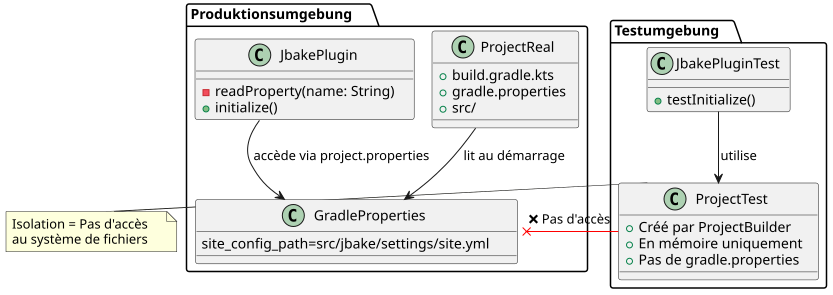
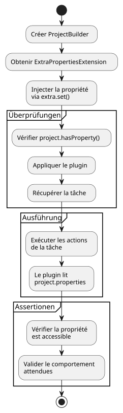
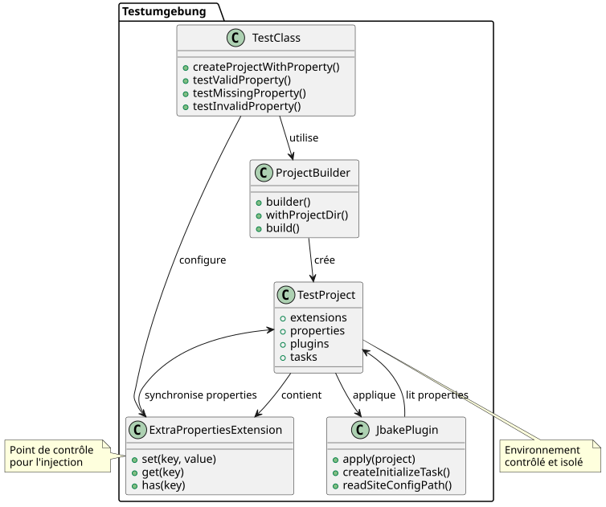

Löse die Herausforderung der Gradle Unit-Tests mit `gradle.properties
Publié le 13 July 2025
Das Problem: Isolieren der Unit-Tests eines Gradle-Plugins
Beim Schreiben von Unit-Tests für ein Gradle-Plugin ist eine häufige Herausforderung, die Abhängigkeiten an die Projektkonfiguration zu verwalten, wie z.B. die Eigenschaften, die in der Datei definiert sind.gradle.properties. In unserem Fall, das Plugin`jbake.ghpages`musste eine Eigenschaft lesen`site_config_path`um korrekt zu funktionieren. Der Unit-Test für die Aufgabe`initialize`Er musste das Verhalten des Plugins in Anwesenheit dieser Eigenschaft überprüfen.
Das grundlegende Problem ist, dass Unit-Tests nach ihrem Wesen isoliert sein müssen. Die Verwendung von`ProjectBuilder`von Gradle erstellt eine Instanz von`Project`im Speicher, vollständig von einem echten Projekt im Dateisystem getrennt. Daher liest diese Testinstanz die Datei nicht automatisch.gradle.properties`und hat daher keine Kenntnis von der Eigenschaft`site_config_path.
Architektur des Problems
Das folgende Diagramm veranschaulicht die Trennung zwischen der Testumgebung und dem Dateisystem :

Die Versuchung einer falschen guten Idee
Ein erster Ansatz könnte darin bestehen, eine Datei zu erstellen.`gradle.properties`fiktiv in den Testressourcen
// src/test/resources/gradle.properties
site_config_path=src/jbake/settings/site.ymlDiese Methode ist jedoch zum Scheitern verurteilt, weil`ProjectBuilder`ist nicht dafür ausgelegt, das Dateisystem nach Konfigurationsdateien zu scannen. Der Test würde isoliert bleiben und diese Datei ignorieren.
Die Lösung: Die Eigenschaft simulieren mit `ExtraPropertiesExtension
Die elegante Lösung dieses Problems besteht nicht darin, die Datei zu lesen, sondern darin, das Vorhandensein der Eigenschaft direkt im Objekt zu simulieren.`Project`Gradle stellt ein leistungsfähigen Mechanismus dafür bereit: die zusätzlichen Eigenschaften (Extra Properties).
Schritt 1: ExtraPropertiesExtension verstehen
`ExtraPropertiesExtension`ist ein Schlüssel-Wert-Container, der jedem Objekt des Gradle-Modells angehängt ist. Er ermöglicht das dynamische Hinzufügen von Eigenschaften zu einem Projekt, einer Aufgabe oder einer anderen Gradle-Erweiterung.

Schritt 2 : Einrichtung des Tests - Vorbereitung
Lasst uns zunächst die Grundstruktur unseres Unit-Tests erstellen :
class JbakeGhPagesPluginTest {
@TempDir
lateinit var testProjectDir: File
@Test
fun `check initialize and config yaml file if not existing`() {
// Étape 1 : Créer un projet de test isolé
val project = ProjectBuilder.builder()
.withProjectDir(testProjectDir)
.build()
// Suite des étapes...
}
}Schritt 3: Einspritzung der Eigenschaft
Hier ist der detaillierte Prozess, um die Eigenschaft im Testprojekt einzufügen:
@Test
fun `check initialize and config yaml file if not existing`() {
// Étape 1 : Créer un projet de test isolé en mémoire
val project = ProjectBuilder.builder()
.withProjectDir(testProjectDir)
.build()
// Étape 2 : Récupérer le gestionnaire de propriétés supplémentaires
val extra = project.extensions.getByType(ExtraPropertiesExtension::class.java)
// Étape 3 : Définir la propriété requise pour ce test
extra.set("site_config_path", "src/jbake/settings/site.yml")
// Étape 4 : Vérifier que la propriété est bien injectée
assertTrue(project.hasProperty("site_config_path"))
// Étape 5 : Appliquer le plugin qui pourra maintenant accéder à la propriété
project.plugins.apply("jbake.ghpages")
// Étape 6 : Exécuter la tâche et vérifier son comportement
val task: Task = project.tasks.findByName("initialize")
.apply(::assertNotNull)!!
// Étape 7 : Exécuter les actions de la tâche
task.actions.forEach { it.execute(task) }
// Étape 8 : Assertions finales
assertEquals(
"src/jbake/settings/site.yml",
project.properties["site_config_path"],
"La propriété devrait être accessible dans le projet"
)
}Schritt 4: Lösungsflussdiagramm

Schritt 5: Vergleich Vorher/Nachher
Schritt 6: Verwaltung mehrerer Testfälle
Um verschiedene Szenarien zu testen, erstellen wir mehrere Tests mit unterschiedlichen Konfigurationen:
class JbakeGhPagesPluginTest {
@TempDir
lateinit var testProjectDir: File
private fun createProjectWithProperty(propertyValue: String?): Project {
val project = ProjectBuilder.builder()
.withProjectDir(testProjectDir)
.build()
// Injection conditionnelle de la propriété
propertyValue?.let { value ->
val extra = project.extensions.getByType(ExtraPropertiesExtension::class.java)
extra.set("site_config_path", value)
}
return project
}
@Test
fun `should work with valid property`() {
val project = createProjectWithProperty("src/jbake/settings/site.yml")
project.plugins.apply("jbake.ghpages")
val task = project.tasks.findByName("initialize")!!
task.actions.forEach { it.execute(task) }
// Assertions pour le cas normal
assertEquals("src/jbake/settings/site.yml", project.properties["site_config_path"])
}
@Test
fun `should handle missing property gracefully`() {
val project = createProjectWithProperty(null) // Pas de propriété
project.plugins.apply("jbake.ghpages")
val task = project.tasks.findByName("initialize")!!
// Le plugin devrait gérer l'absence de propriété
assertDoesNotThrow {
task.actions.forEach { it.execute(task) }
}
}
@Test
fun `should handle invalid property path`() {
val project = createProjectWithProperty("invalid/path/to/config.yml")
project.plugins.apply("jbake.ghpages")
val task = project.tasks.findByName("initialize")!!
// Test du comportement avec un chemin invalide
assertThrows<FileNotFoundException> {
task.actions.forEach { it.execute(task) }
}
}
}endgültige Architektur der Lösung

Die Vorteile dieses Ansatzes
-
Vollständige Isolierung: Der Test hängt von keiner externen Datei ab. Er ist autonom und kann in jeder Umgebung (lokal, CI/CD, usw.) zuverlässig ausgeführt werden.
-
Klarheit und IntentionDer Test erklärt explizit die Voraussetzungen für seine Ausführung. Wer den Test liest, sieht sofort, dass das Plugin die Eigenschaft benötigt.`site_config_path`um zu funktionieren.
-
WartbarkeitWenn sich der Name der Eigenschaft ändert, muss er nur an einer Stelle im Test aktualisiert werden, ohne dass Testkonfigurationsdateien manipuliert werden müssen.
-
FlexibilitätEs wird trivial, verschiedene Szenarien zu testen, indem man einfach den Wert der injizierten Eigenschaft in jedem Test ändert (gültiger Wert, ungültig, fehlend usw.).
-
LeistungEs wird keine Datei eingelesen, alles passiert im Speicher, was die Tests schneller macht.
-
Reproduzierbarkeit: Die Tests sind deterministisch, da sie nicht vom Zustand des Dateisystems abhängen.
Gute Praktiken und Tipps
Erstellen einer Hilfsmethode
class GradleTestUtils {
companion object {
fun createProjectWithProperties(
projectDir: File,
properties: Map<String, String>
): Project {
val project = ProjectBuilder.builder()
.withProjectDir(projectDir)
.build()
val extra = project.extensions.getByType(ExtraPropertiesExtension::class.java)
properties.forEach { (key, value) ->
extra.set(key, value)
}
return project
}
}
}Validierung der Eigenschaften
@Test
fun `should validate property injection`() {
val project = createProjectWithProperty("test-value")
// Vérifications multiples
assertTrue(project.hasProperty("site_config_path"))
assertEquals("test-value", project.property("site_config_path"))
assertNotNull(project.properties["site_config_path"])
// Vérification que la propriété est accessible par le plugin
project.plugins.apply("jbake.ghpages")
// ... reste du test
}Fazit
Anstatt sich damit abzumühen, dass eine Einheitstestumgebung Konfigurationsdateien liest, besteht die beste Praxis darin, den erforderlichen Zustand zu simulieren. Die Verwendung von`ExtraPropertiesExtension`Um Gradle-Eigenschaften programmgesteuert festzulegen, ist die sauberste und robusteste Methode, um effektive und zuverlässige Unit-Tests für Plugins durchzuführen.
Diese Technik wandelt ein Problem mit externen Abhängigkeiten in eine einfache Dependency Injection um, im Kern der Philosophie des Test‑Driven Development (TDD). Sie bietet vollständige Kontrolle über die Testumgebung und hält gleichzeitig die Isolation aufrecht, die für qualitativ hochwertige Unit‑Tests erforderlich ist.
Die in diesem Artikel dargestellten Diagramme und Beispiele zeigen, wie dieser Ansatz schrittweise und methodisch umgesetzt werden kann, wodurch eine robuste und wartbare Testsuite für Ihre Gradle‑Plugins erstellt werden kann.